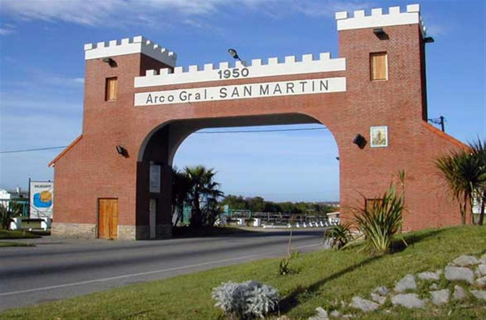
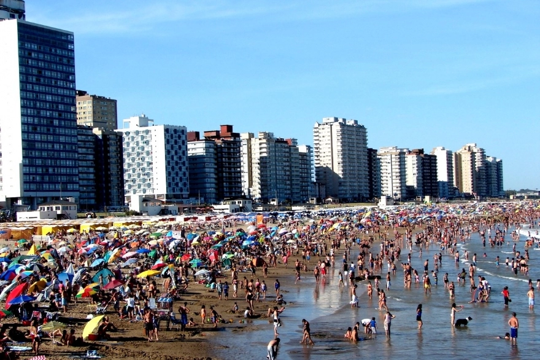
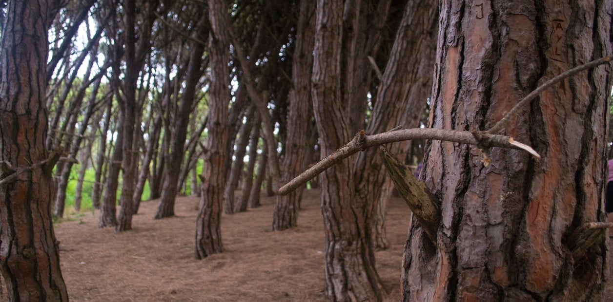
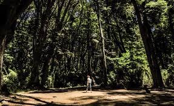
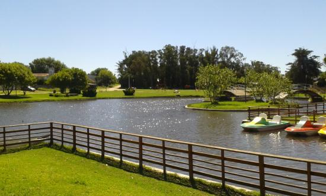
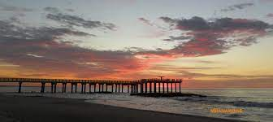

Miramar es una ciudad costera argentina situada en el sudeste de la provincia de Buenos Aires. Es la cabecera del partido de General Alvarado y un importante centro turístico. Se encuentra a 48 km de Mar del Plata y a 448 km de la ciudad de Buenos Aires.

Con un largo de más de 10 km las playas de Miramar son ideales para ser disfrutadas en familia por su seguridad y tranquilidad en verano o su serenidad en invierno.
Con el cuerpo de guardavidas de Miramar, velando por la seguridad de los bañistas en todo momento, el disfrutar del mar y de las playas se le sumas valores agregados, la seguridad y la tranquilidad.
Los deportes acuáticos, como el surf, el jet ski, la natación, o la pesca (Sección Deportes) suman para que las playas de la ciudad sean aprovechadas al máximo en su vacaciones de verano o sus escapadas en invierno.
Ud. puede disfrutar de la playa miramarense ya sea en los espacios públicos, o alquilar una sombrilla o una carpa en alguno de los más de 35 balnearios que la ciudad ofrece (Sección Balnearios)
De esta manera, las playas de la ciudad cuentan con alternativas para todos los gustos, con espacio amplios como los del sector norte, playas ubicadas en el centro de la ciudad, o espacios más agrestes como los del parador que se encuentra en el vivero dunícola

(Bosque Energetico). Historias, mitos, secretos ... ¡y mucho más que puedes conocer durante tu visita! Un bosque especial, lleno de historias sorprendentes, que durante años ha llamado la atención del mundo por sus características sobrenaturales ... Puede disfrutar solo, en pareja, en familia o con amigos, guiados o acompañados por nuestro guía turístico del mismo Bosque Energético. ¡Conocerlo es convencerse!

(Vivero, Municipal). Historias, mitos, secretos ... ¡y mucho más que puedes conocer durante tu visita! Un bosque especial, lleno de historias sorprendentes, que durante años ha llamado la atención del mundo por sus características sobrenaturales ... Puede disfrutar solo, en pareja, en familia o con amigos, guiados o acompañados por nuestro guía turístico del mismo Bosque Energético. ¡Conocerlo es convencerse!

El Parque Patricios se encuentra en el centro de Miramar, una ciudad costera en el sudeste de la provincia de Buenos Aires. Es un punto de referencia importante y un popular destino turístico en la zona.
El parque es conocido por su entorno tranquilo y sus hermosos paisajes naturales. Está rodeado de árboles frondosos, senderos para caminar y áreas de césped donde las personas pueden relajarse y disfrutar del aire libre.
Los parques como el Parque Patricios desempeñan un papel vital en la vida de la comunidad. Ofrecen espacios para la recreación, el ejercicio y la socialización, y también contribuyen al bienestar general de los residentes.

El muelle es una estructura que se adentra en el mar y proporciona un lugar para la pesca, la observación del mar y la recreación.
Es un punto de interés turístico importante en Miramar y es frecuentemente visitado por residentes y visitantes por igual.
Historia:
El muelle tiene una rica historia que se remonta a sus orígenes. Ha sido un punto de referencia en la ciudad durante muchos años, sirviendo como lugar de encuentro y actividad.
Pesca y Recreación:
Uno de los principales usos del muelle es para la pesca deportiva. Es un lugar popular para los pescadores locales y turistas que buscan disfrutar de la actividad en un entorno costero.
Vistas Escénicas:
El muelle ofrece vistas panorámicas del océano y la costa, lo que lo convierte en un lugar pintoresco para pasear y disfrutar del entorno natural.
Eventos y Actividades Especiales:
A veces, el muelle puede ser el escenario de eventos especiales, festivales o actividades organizadas por la comunidad local.
Importancia para la Comunidad:
El muelle es un elemento importante de la comunidad de Miramar y contribuye a la cultura y la identidad de la ciudad.

La
Terminal de Omnibus, ubicada en la Avenida 40 nº 715, esquina calle 15 es el punto de arribo y partida de las diferentes empresas de transporte que operan en Miramar. De esta manera, La ciudad cuenta, a partir de mediados de 2011 con un ámbito adecuado para recibir y despedir a la gran cantidad de pasajeros que circulan por la ciudad. Esta moderna estructura fue inaugurada por la Presidente de la Nación y el Gobernador y ha recibido muy buenas críticas de profesionales debido a su diseño. Contigua a la Terminal del Ferrocarril, genera un espacio que facilita y ordena el transporte público de pasajeros, encontrándose en un punto estratégico.